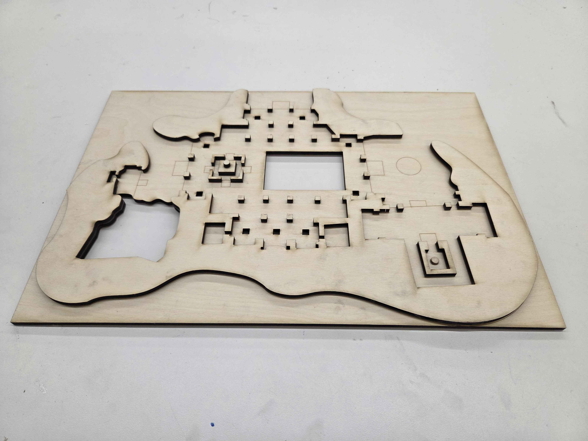
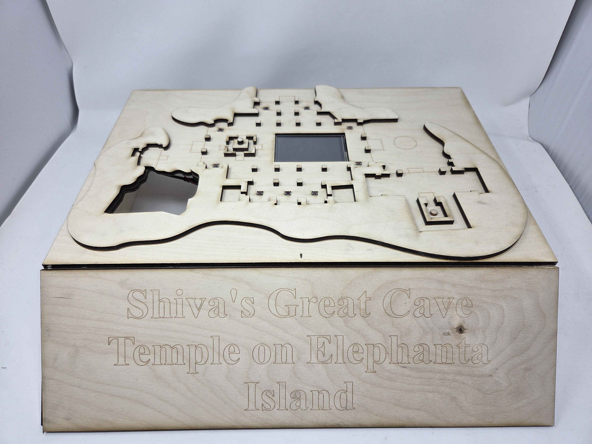
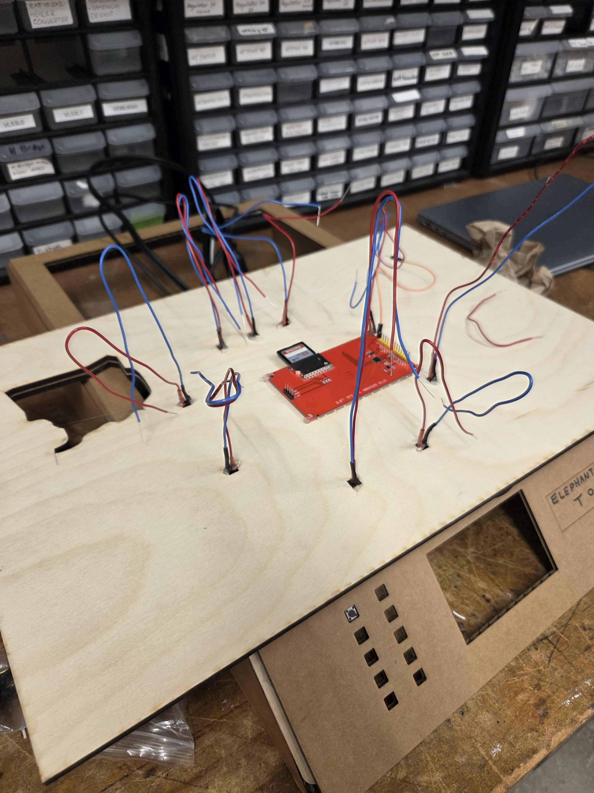

Pitch
I am a senior pursuing a degree in Art History and South Asian Studies preparing a thesis as part of my honors requirements. As any senior working on a thesis knows, the process demands an immense amount of work, the majority of which will never reach the attention of the average person. It is not only natural, but in some ways required that you pursue a topic specialized enough that it remain inaccessible to those outside of your department. While certainly a formative step in a inchoate academic career, I still firmly believe that the purpose of scholarship is to reach the minds of everyday people, enriching, in some way, their lives. In light of this conviction, I decided to take advantage of this final project as an opportunity to make something that presents the work of my thesis in a more digestible, interactive way. To accomplish this, I decided to create an interactive exhibition of the cave temple I'm studying called the Great Cave of Elephanta. Viewers physically situate themselves within the space by pressing buttons to trigger images - taken from my own field research - which appear in the central screen. The idea is that by involving them physically, get develop some sense of the interior space and explore freely to marvel at the gorgeous images within.
Process
Having demonstrated an iterable proof of concept for the display of images during Minimum Viable Product week, the next step was to create the model of the cave itself. To do this, I uploaded a plan of the temple to Fusion 360 and traced every detail of it using splines and other sketch geometries. I then laser cut this model twice - the first would serve as the base of the exhibition while the second would be wood glued on top to give a sense of depth. Having wrapped up the model, the next step was the casing. For this, I laser cut a four inch stand as well as a title plate which I attached to the front.


Finally, all I had to do was integrate the rest of the images, design a completed circuit, and solder it permanently to an open breadboard. This proved surprisingly complex, as the buttons couldn't be placed in the breadboard itself and I had a small space to work with underneath the model. I also ran into a small problem after having finished the solder when I realized that some of the buttons I had coded as 'INPUT_PULLUP' did not have a built-in pullup function. To fix this, I had to unexpectedly add a 10k resistor to the circuit connecting back to the 3.3v pin.
